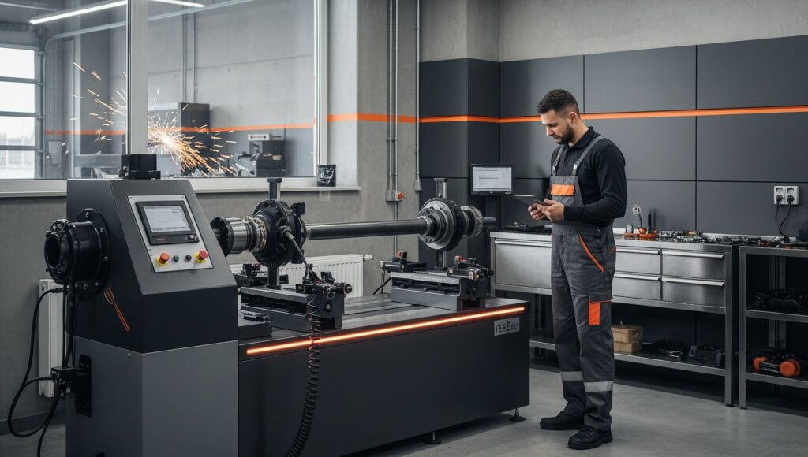

Специализированный цех по ремонту и изготовлению карданных валов автотехцентра «ГАГАРИНА 106» оснащён высокотехнологичным оборудованием, которое позволяет выполнять работы с заводской точностью. Мы работаем с карданами разной сложности — от стандартных узлов легковых автомобилей до валов для тяжёлой техники и специального оборудования.
Карданный вал работает под серьёзной нагрузкой, поэтому любые вибрации, стуки, люфт и посторонние шумы лучше не откладывать. Своевременная диагностика и ремонт помогают избежать более дорогих поломок и вернуть автомобилю ровную, безопасную работу.

Мы делаем ставку не только на сам ремонт, но и на итоговый результат: кардан должен работать ровно, без биений и лишней вибрации. Именно поэтому для этой услуги особенно важны точность оборудования, опыт мастеров и аккуратная балансировка после ремонта.
Такой подход помогает быстрее начать ремонт, подобрать удобный для вас сценарий работы и не терять время на лишние согласования.
Если у вас нестандартная задача, лучше просто позвонить: подскажем, возьмёмся ли за работу, что потребуется по демонтажу и какой вариант ремонта будет оптимальным.